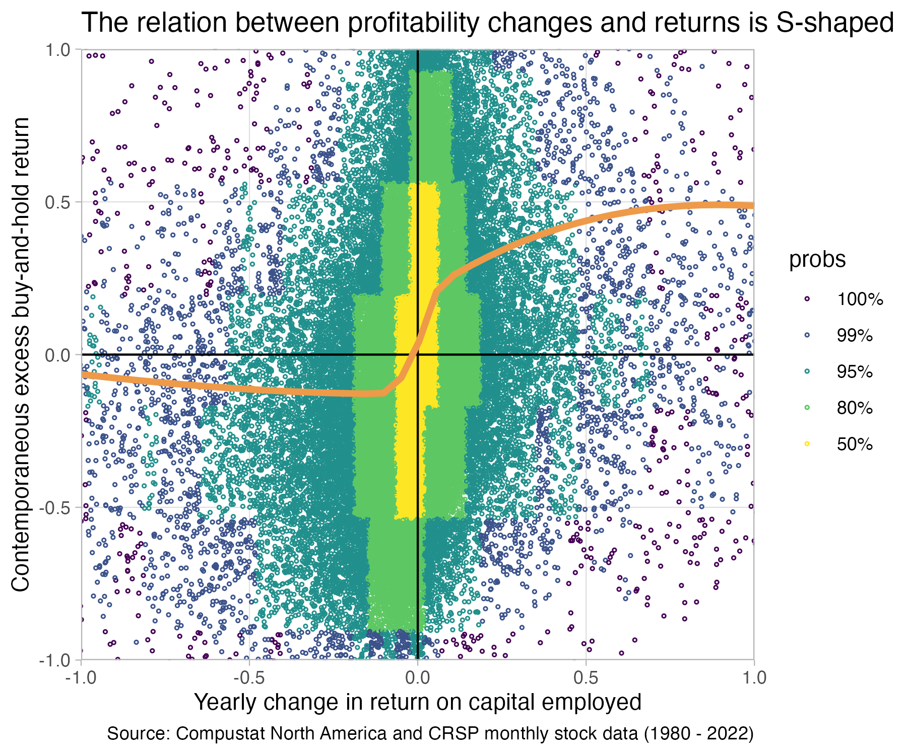

library(collapse)
library(tidyverse)
library(ggdensity)
1as_yearmon <- zoo::as.yearmon- 1
-
This statement is only attaching one function
as.yearmonfrom the {zoo} package.
In this part we will create a sample to investigate the relation between yearly changes in firm profitability and contemporaneous returns. We will find that the relation is far from simple. In addition to being the center of many interesting questions, this analysis is a nice exercise. It allows us to go into more details on how to transform data–especially how to prepare panel data for analyses. We will compute more involved variables, such as buy-and-hold-returns. We will also learn how to combine data in multiple tables. Finally, we will discuss a few presentation design principles that are important for presenting results. The final result of our analysis will be the following plot:

library(collapse)
library(tidyverse)
library(ggdensity)
1as_yearmon <- zoo::as.yearmonas.yearmon from the {zoo} package.
R—and especially newer packages included in the tidyverse package ecosystem—have very expressive data verbs that make code readable. Most data transformation steps concerning data tables are really a combination of a few basic actions. The most common are listed below with their names as used in R’s dplyr package. We will use these in what follows to transform the raw compustat data into the variables we need for later analysis.

dplyr::select() picks columns of a table based on their names.dplyr::filter() picks rows of a table based on their values.dplyr::arrange() changes the ordering of the rows.dplyr::mutate() adds new columns that are functions of existing columnsdplyr::summarize() reduces/aggregates multiple rows down to a single summary.If you add join and grouping actions to this list, then 98% of everything you want to do is a combination of the above actions.
For example, the count function that we encountered in the previous part, is really grouped summarize action:
head(iris) Sepal.Length Sepal.Width Petal.Length Petal.Width Species
1 5.1 3.5 1.4 0.2 setosa
2 4.9 3.0 1.4 0.2 setosa
3 4.7 3.2 1.3 0.2 setosa
4 4.6 3.1 1.5 0.2 setosa
5 5.0 3.6 1.4 0.2 setosa
6 5.4 3.9 1.7 0.4 setosacount(iris, Species, sort = TRUE) Species n
1 setosa 50
2 versicolor 50
3 virginica 50 Species n_obs
1 setosa 50
2 versicolor 50
3 virginica 50iris |>
summarize(
mean_Petal.Width = mean(Petal.Width),
n_obs = n(),
stdev_Petal.Width = sd(Petal.Width)
) mean_Petal.Width n_obs stdev_Petal.Width
1 1.199333 150 0.7622377iris |>
summarize( .by = Species,
mean_Petal.Width = mean(Petal.Width, na.rm = TRUE),
stdev_Petal.Width = sd(Petal.Width, na.rm = TRUE),
n_miss_Petal.Width = sum(is.na(Petal.Width))
) Species mean_Petal.Width stdev_Petal.Width n_miss_Petal.Width
1 setosa 0.246 0.1053856 0
2 versicolor 1.326 0.1977527 0
3 virginica 2.026 0.2746501 0Let us load the data from previous chapter
ccm <- readRDS("data/ccm-unique.rds")We will also use a second set of data this time. This is monthly stock return data from CRSP.
crsp_raw <- read_csv("data/crsp-raw-2023-07-08-csv.zip", show_col_types = FALSE)
# making all column names lowercase:
colnames(crsp_raw) <- tolower(colnames(crsp_raw))Here is how the raw returns data looks like:
glimpse(crsp_raw)Rows: 3,800,162
Columns: 13
$ permno <dbl> 10000, 10000, 10000, 10000, 10000, 10000, 10000, 10000, 10000…
$ date <date> 1985-12-31, 1986-01-31, 1986-02-28, 1986-03-31, 1986-04-30, …
$ shrcd <dbl> NA, 10, 10, 10, 10, 10, 10, 10, 10, 10, 10, 10, 10, 10, 10, 1…
$ exchcd <dbl> NA, 3, 3, 3, 3, 3, 3, 3, 3, 3, 3, 3, 3, 3, 3, 3, 3, 3, 3, NA,…
$ shrcls <chr> NA, "A", "A", "A", "A", "A", "A", "A", "A", "A", "A", "A", "A…
$ primexch <chr> NA, "Q", "Q", "Q", "Q", "Q", "Q", "Q", "Q", "Q", "Q", "Q", "Q…
$ hexcd <dbl> 3, 3, 3, 3, 3, 3, 3, 3, 3, 3, 3, 3, 3, 3, 3, 3, 3, 3, 3, 2, 2…
$ dlstcd <dbl> NA, NA, NA, NA, NA, NA, NA, NA, NA, NA, NA, NA, NA, NA, NA, N…
$ dlret <chr> NA, NA, NA, NA, NA, NA, NA, NA, NA, NA, NA, NA, NA, NA, NA, N…
$ prc <dbl> NA, -4.37500, -3.25000, -4.43750, -4.00000, -3.10938, -3.0937…
$ ret <chr> NA, "C", "-0.257143", "0.365385", "-0.098592", "-0.222656", "…
$ shrout <dbl> NA, 3680, 3680, 3680, 3793, 3793, 3793, 3793, 3793, 3793, 384…
$ vwretd <dbl> 0.043061, 0.009830, 0.072501, 0.053887, -0.007903, 0.050847, …To generate the return variables, we first need to do some filtering. We only want common shares and only shares listed on the the three biggest US exchanges
crsp <- crsp_raw |>
filter(
shrcd %in% c(10, 11), # restrict to common ordinary shares
exchcd %in% c(1, 2, 3) # 1,2, and 3 are NSYE, AMEX, NASDAQ
) |>
select(-shrcd, -primexch, -hexcd, -exchcd) |>
arrange(permno, date)The output of glimpse above also showed you that two columns we need next (monthly returns ret and delisting returns dlret) contain a weird mix of character and number values. The character values encode some situations in a month, that we do not care about right now. We will set these values to missing so that we can turn both columns into numeric columns. We use an dplyr::if_else function to do so. It has the form: “if the if condition is true, use this value, else use that value”. We then convert the result into a numeric column using as.numeric:
crsp <- crsp |>
mutate(
ret = as.numeric(if_else(ret %in% c("B", "C"), NA, ret)),
dlret = as.numeric(if_else(dlret %in% c("A", "S", "T", "P"), NA, dlret)),
)Next, we need to adjust the monthly returns (ret) column. When a stock gets delisted, the delisting return is not fully incorporated in that return variable. We thus need to adjust. We do so by adding a delisting return whenever it is available (is.na(dlret) == FALSE) and the monthly return is not (is.na(ret) == TRUE). This is a bit of a quick-and-dirty way of adjusting, but suffices for our purposes.
crsp <- crsp |>
mutate(
ret = if_else(is.na(ret) == TRUE & is.na(dlret) == FALSE, dlret, ret)
) |>
select(-dlret, -dlstcd)With proper numeric monthly return date, we can now proceed to generate a yearly return measure that we can use with our yearly financial statement data. Remember, the return data is monthly data. So, our unit of observation in this data set is at the security-month level. In our compustat dataset, the unit of observation is the firm-fiscal year. We ultimately want to compare yearly changes in a firm profitability with a firm’s stock return over the same period. So we need a “yearly” return. We are going to compute that now. We are going to compute an excess buy-and-hold return:
\[EBHR_{i,t}^h = \prod_{k=1}^h (1+Ret_{i,t+k}) - \prod_{k=1}^h (1+MktRet_{t+k})\] This is the return from buying a stock at the end of \(t\) and holding it for \(h\) months minus the return from a benchmark portfolio (usually some kind of market portfolio or similar).
To compute this variable, we need to compute leads and lags of our ret variable–a “lag” of 1 meaning the return of the month before, a lead of 1 meaning the next month’s return and so on. We will use collapse::flagfor this purpose. The following code creates lag 1 and 2 and lead 1 and 2 for the returns column and returns everything in a new matrix (a minus number–as in -2–stands for leads instead of lags):
head(flag(crsp$ret, n = -2:2), 24) F2 F1 -- L1 L2
[1,] 0.365385 -0.257143 NA NA NA
[2,] -0.098592 0.365385 -0.257143 NA NA
[3,] -0.222656 -0.098592 0.365385 -0.257143 NA
[4,] -0.005025 -0.222656 -0.098592 0.365385 -0.257143
[5,] -0.080808 -0.005025 -0.222656 -0.098592 0.365385
[6,] -0.615385 -0.080808 -0.005025 -0.222656 -0.098592
[7,] -0.057143 -0.615385 -0.080808 -0.005025 -0.222656
[8,] -0.242424 -0.057143 -0.615385 -0.080808 -0.005025
[9,] 0.060000 -0.242424 -0.057143 -0.615385 -0.080808
[10,] -0.377358 0.060000 -0.242424 -0.057143 -0.615385
[11,] -0.212121 -0.377358 0.060000 -0.242424 -0.057143
[12,] 0.000000 -0.212121 -0.377358 0.060000 -0.242424
[13,] -0.384615 0.000000 -0.212121 -0.377358 0.060000
[14,] -0.062500 -0.384615 0.000000 -0.212121 -0.377358
[15,] -0.066667 -0.062500 -0.384615 0.000000 -0.212121
[16,] 0.000000 -0.066667 -0.062500 -0.384615 0.000000
[17,] NA 0.000000 -0.066667 -0.062500 -0.384615
[18,] 0.020408 NA 0.000000 -0.066667 -0.062500
[19,] 0.025200 0.020408 NA 0.000000 -0.066667
[20,] 0.009901 0.025200 0.020408 NA 0.000000
[21,] -0.009804 0.009901 0.025200 0.020408 NA
[22,] -0.013069 -0.009804 0.009901 0.025200 0.020408
[23,] -0.010204 -0.013069 -0.009804 0.009901 0.025200
[24,] 0.072165 -0.010204 -0.013069 -0.009804 0.009901Where F stands for “Forward” and L stands for “Lag”.
We cannot use the function as is however. There are two things to consider with panel data when computing leads and lags. The first is that one has to be careful not to “lag into” the previous firm. Look at the following excerpt of the data to see the issue. The lag_ret column pushes a return from permno 10001 (from 2017) into the next security 10002.
crsp |>
select(permno, date, ret) |>
mutate(lag_ret = flag(ret, 1)) |>
slice(395:405)# A tibble: 11 × 4
permno date ret lag_ret
<dbl> <date> <dbl> <dbl>
1 10001 2017-05-31 0.016 -0.0157
2 10001 2017-06-30 0.0236 0.016
3 10001 2017-07-31 0.00193 0.0236
4 10001 2017-08-31 0.0116 0.00193
5 10002 1986-01-31 NA 0.0116
6 10002 1986-02-28 0.140 NA
7 10002 1986-03-31 0.0708 0.140
8 10002 1986-04-30 0.0529 0.0708
9 10002 1986-05-30 -0.0209 0.0529
10 10002 1986-06-30 -0.132 -0.0209
11 10002 1986-07-31 0.0493 -0.132 The second issue is if that there might be implicit missing months in the data. For example if one row is February 1987 and the next row is April 1987 instead of March.
Both of these issues can be addressed by making the lagging function aware of the panel structure. It is not by default. To do so, we first create a year-month column
crsp$yrmon <- as_yearmon(crsp$date)
head(crsp$yrmon)[1] "Jan 1986" "Feb 1986" "Mar 1986" "Apr 1986" "May 1986" "Jun 1986"Next we use collapse::findex_by to make functions like flag aware of the panel structure (permno-yearmonth).
crsp <- crsp |>
1 mutate(yrmon = as_yearmon(date)) |>
2 findex_by(permno, yrmon) |>
mutate(
3 log_ret = log(ret + 1),
4 BH12M_log_ret = rowSums(flag(log_ret, n = -3:8)),
5 BHR12M = exp(BH12M_log_ret) - 1,
6 log_mret = log(vwretd + 1),
BH12M_log_mret = rowSums(flag(log_mret, n = -3:8)),
BH12M_mret = exp(BH12M_log_mret) - 1,
7 EBHR12M = BHR12M - BH12M_mret
) |>
8 unindex() |>
select(-log_ret, -log_mret, -BH12M_log_ret, -BH12M_log_mret, BH12M_mret)flag to use
flag creates a matrix of leads and lags from 8 months before the current months to 3 months after the current month (e.g, if we are in December from April of the current year to March of the next year). Then rowSums sums up all the values in a given row of the matrix to one value. This is a log buy-and-hold return.
Let’s look at the differences in raw returns and buy-and-hold returns, just so that you can get a feeling for the differences in magnitude and the variation.
crsp |>
select(ret, BHR12M, EBHR12M) |>
descr()Dataset: EBHR12M, 3 Variables, N = 2674972
--------------------------------------------------------------------------------
ret (numeric):
Statistics (1% NAs)
N Ndist Mean SD Min Max Skew Kurt
2'648249 409862 0.01 0.19 -1 24 7.83 408.86
Quantiles
1% 5% 10% 25% 50% 75% 90% 95% 99%
-0.42 -0.24 -0.16 -0.07 0 0.07 0.18 0.27 0.6
--------------------------------------------------------------------------------
BHR12M (numeric):
Statistics (10.98% NAs)
N Ndist Mean SD Min Max Skew Kurt
2'381141 2'364174 0.15 0.83 -1 106.54 14 816.75
Quantiles
1% 5% 10% 25% 50% 75% 90% 95% 99%
-0.87 -0.67 -0.52 -0.24 0.05 0.35 0.78 1.21 2.87
--------------------------------------------------------------------------------
EBHR12M (numeric):
Statistics (10.98% NAs)
N Ndist Mean SD Min Max Skew Kurt
2'381141 2'380644 0.02 0.81 -1.63 105.92 14.99 908.41
Quantiles
1% 5% 10% 25% 50% 75% 90% 95% 99%
-0.99 -0.75 -0.61 -0.34 -0.07 0.21 0.6 1.02 2.64
--------------------------------------------------------------------------------We now get to another important and common task. Merging–or joining–data from different sources. In our case, we need to join the our financial data from Computstat to the 12-month buy and hold returns we just computed. For that purpose, we quickly create a data frame that contains only the return data we want to merge to financial data.
crsp_join <- crsp |>
select(permno, yrmon, BHR12M, EBHR12M) |>
drop_na()We join via what is called a left join. Left joins keep all rows from the “left” table/data frame and join all rows from the “right” table/data frame for which it finds matching keys. In our case the keys are the permno security identifier to identify the firm, and the year month of the fiscal year end. All rows in the left table for which we do not find a match in the right table are filled with missings for the columns BHR12M and EBHR12M. This is the syntax.
smple_raw <- ccm |>
1 mutate(yrmon = as_yearmon(datadate)) |>
2 left_join(crsp_join, join_by(permno, yrmon))Let us check how many matches we had using collapse::fnobs, which shows the number of non-missing observations per column
fnobs(smple_raw) gvkey linkprim liid linktype permno datadate fyear tic
239192 239192 239192 239192 239192 239192 239191 239192
cusip conm curcd fyr at ceq che dlc
239192 239192 239191 239191 218211 218050 217634 217255
dltt ib oiadp sale exchg costat fic priusa
217206 217787 217229 217266 239192 239192 239192 239192
sic yrmon BHR12M EBHR12M
239192 239192 187990 187990 We had 239,192 observations in the compustat file and found a matching permno x yrmon combination 187,990 cases in the crsp_join file.
We are not dropping missing values just yet. We first want to compute the other variables.
We also want to double-check that we still have unique firm-fiscal-year combinations after the merge.
smple_raw |> count(gvkey, fyear) |> count(n)Storing counts in `nn`, as `n` already present in input
ℹ Use `name = "new_name"` to pick a new name.# A tibble: 1 × 2
n nn
<int> <int>
1 1 239192Looks good. We only have gvkey x fyear combinations that occur exactly once.
The second to last step in getting the data ready for our analysis is creating the change in return on capital employed (ROCE). For simplicity, we define capital employed (CE) as equity (ceq) plus debt (dltt + dlc) minus cash and cash equivalents (che). We use operating income after depreciation (oiadp) as the numerator. Because we are dealing with a panel we have to use findex_by again to make the flag function aware of the panel structure
smple_raw <-
smple_raw |>
1 drop_na(fyear) |>
arrange(gvkey, fyear) |>
2 findex_by(gvkey, fyear) |>
mutate(
3 dltt = replace_NA(dltt, 0),
dlc = replace_NA(dlc, 0),
che = replace_NA(che, 0),
4 cap_employed = ceq + dltt + dlc - che,
5 roce = oiadp / ((cap_employed + flag(cap_employed, 1))/2),
6 ch_roce = roce - flag(roce, 1)
) |>
7 unindex()flag
The last step is to clean the data a bit more. We could have done this before, but it is usually best to do this in the end when all variables are computed (because of the panel structure, you do not wanna delete rows in the middle of computations that might involve leads and lags). Small Compustat firms are often full of outliers (e.g., negative equity and huge debt.) We want to look at the relation for “reasonably normal” companies. So we filter on having a minimum size in terms of total assets and revenues as well as slightly positive equity. We then drop all missing values.
smple0 <- smple_raw |>
select(gvkey, fyear, conm, yrmon, roce, ch_roce, EBHR12M, sic, sale, at, ceq) |>
filter(
at > 50,
sale > 50,
ceq > 1
) |>
drop_na()Let us look at the distribution of our main variables of interest
smple0 |>
select(ch_roce, EBHR12M) |>
descr()Dataset: EBHR12M, 2 Variables, N = 102823
--------------------------------------------------------------------------------
ch_roce (numeric): Operating Income After Depreciation
Statistics
N Ndist Mean SD Min Max Skew Kurt
102823 102823 -0.04 22.21 -4591.53 1913.35 -84.58 19881.56
Quantiles
1% 5% 10% 25% 50% 75% 90% 95% 99%
-2.09 -0.31 -0.16 -0.05 -0 0.03 0.12 0.24 2.04
--------------------------------------------------------------------------------
EBHR12M (numeric):
Statistics
N Ndist Mean SD Min Max Skew Kurt
102823 102823 0.05 0.66 -1.45 34.84 9.82 281.43
Quantiles
1% 5% 10% 25% 50% 75% 90% 95% 99%
-0.84 -0.6 -0.47 -0.25 -0.03 0.21 0.55 0.89 2.26
--------------------------------------------------------------------------------We can still see huge outliers. You can explore the reasons for those at your own leasure. You will find things like firm-years with negative capital employed heavily distorting the ROCE and similar things. We could (and maybe should) spend more time cleaning those cases. An alternative you often see is to just trim outliers, assuming they are all irregular patterns. We will do this now too for expediency. We will remove the bottom and top 1% of change in ROCE observations:
smple <- smple0 |>
filter(
ch_roce < quantile(ch_roce, 0.99),
ch_roce > quantile(ch_roce, 0.01)
)With returns it is more likely that large outliers are features of the data and not irregular outliers. BHR returns can be very heavily be influenced by a few large values however. Still, we don’t filter the BHR returns for now.
To motivate the plot we are about to make, we will start with a useless plot:
smple |>
ggplot(aes(x = ch_roce, y = EBHR12M)) +
geom_point(size = 0.5, shape = 21)This is a prime example of over-plotting. Too many points on top of each other. Even if we would make them partially transparent, there is no chance you will see a pattern between changes in ROCE and excess buy-and-hold returns in this mess. You cannot even see where most of the points are.
Our workaround to uncovering structure is twofold. First we color the points according to where most of the points are starting from the center. Second, we draw a flexible trendline through the point cloud.
1fig2 <- smple |>
2 ggplot(aes(x = ch_roce, y = EBHR12M)) +
3 ggdensity::geom_hdr_points(size = 0.5, shape = 21) +
4 geom_vline(xintercept = 0) +
geom_hline(yintercept = 0) +
5 scale_x_continuous(expand = c(0, 0)) +
scale_y_continuous(expand = c(0, 0)) +
6 geom_smooth(
method = 'gam',
formula = y ~ s(x, bs = "cs"),
color = "tan2",
linewidth = 1.5,
se = FALSE
)+
7 coord_cartesian(xlim = c(-1, +1), ylim = c(-1, +1)) +
8 theme_light() +
9 theme(panel.grid.minor = element_blank()) +
10 labs(
y = "Contemporaneous excess buy-and-hold return",
x = "Yearly change in return on capital employed",
title = "The relation between profitability changes and returns is S-shaped",
caption = "Source: Compustat North America and CRSP monthly stock data (1980 - 2022)"
)
fig2fig2
geom_smooth generates a smooth trendline. We need to specify a method for drawing this and we choose GAM (general additive model) with a cubic spline formula.
coord_cartesian allows us to “zoom” into the data without throwing away points. This is important as we want geom_smooth to draw the trendline taking into account all points, not only the ones we see into the zoomed-in plot
Just to make sure our results are not sensitive to extreme returns we can re-draw the graph after filtering out extreme EBHR12M values:
smple |>
filter(
EBHR12M < quantile(EBHR12M, 0.99),
EBHR12M > quantile(EBHR12M, 0.01)
) |>
ggplot(aes(x = ch_roce, y = EBHR12M)) +
ggdensity::geom_hdr_points(size = 0.5, shape = 21) +
geom_vline(xintercept = 0) +
geom_hline(yintercept = 0) +
scale_x_continuous(expand = c(0, 0)) +
scale_y_continuous(expand = c(0, 0)) +
geom_smooth(
method = 'gam',
formula = y ~ s(x, bs = "cs"),
color = "tan2",
linewidth = 1.5,
se = FALSE
)+
coord_cartesian(xlim = c(-1, +1), ylim = c(-1, +1)) +
theme_light() +
theme(panel.grid.minor = element_blank()) +
labs(
y = "Contemporaneous excess buy-and-hold return",
x = "Yearly change in return on capital employed",
title = "The relation between profitability changes and returns is S-shaped",
caption = "Source: Compustat North America and CRSP monthly stock data (1980 - 2022)\nExtreme returns were removed from this figure."
)The S-shape is still there. So let’s save the final result of our efforts. The graph clearly shows a non-linear association between yearly changes in firm profitability and buy-and-hold returns over the same period as the change. This can have many implications of course. It might be that larger changes are less “persistent”, investors expect them to reverse. It might be that larger changes are more likely to be anticipated. Etc.
ggsave("chroce-bhrets.png", fig2, width = 6, height = 5, units = "in")